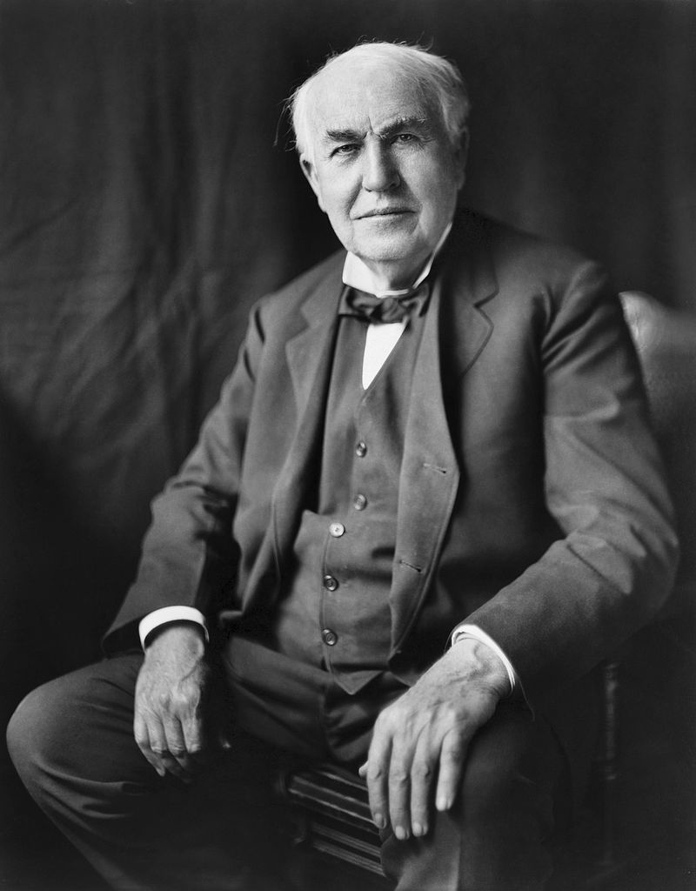

Thomas Edison
The man who loved innovation

Thomas Alva Edison was an American inventor and businessman. He developed many devices in fields such as electric power generation, mass communication, sound recording, and motion pictures.
Here's a time-line of Thomas Alva Edison life:
- 1847 - February 11, 1847- Thomas Alva Edison was born in Milan, Ohio, to Samuel and Nancy Edison.
- 1854 - Edison's family moved to Port Huron, Michigan.
- 1862 - At the age of 15, Edison became a telegraph operator for Western Union. He worked in various cities across the United States, including Memphis, Boston, and New York City.
- 1868 - Edison moved to Boston to work for the Western Union's main office, where he began to experiment with telegraph technology and develop his own ideas for inventions
- 1869 - Edison invented his first patentable invention, the electric vote recorder. He hoped to sell the device to Congress, but it was not successful.
- 1876 - Edison opened his Menlo Park laboratory in New Jersey, which became the site of many of his most significant inventions.
- 1877 - Edison invented the phonograph, which allowed for the recording and playback of sound. He also began work on the incandescent light bulb, which he would later patent in 1880.
- 1878 - Edison founded the Edison Electric Light Company, which eventually became General Electric.
- 1887 - Edison built a laboratory in West Orange, New Jersey, which became his primary research facility for the rest of his life.
- 1891 - Edison patented the kinetoscope, a device that allowed for the viewing of moving pictures.
- 1901 - Edison invented the alkaline storage battery, which was used in many applications, including automobiles, submarines, and airplanes.
- 1914 - Edison's research team developed the first successful motion picture camera, which they called the Kinetophone.
- 1931 - Edison died of complications from diabetes at his home in West Orange, New Jersey.
I was lucky to get into computers when it was a very young and idealistic industry. There weren't many degrees offered in computer science, so people in computers were brilliant people from mathematics, physics, music, zoology, whatever. They loved it, and no one was really in it for the money... There are people around here who start companies just to make money, but the great companies, well, that's not what they're about." —Steve Jobs